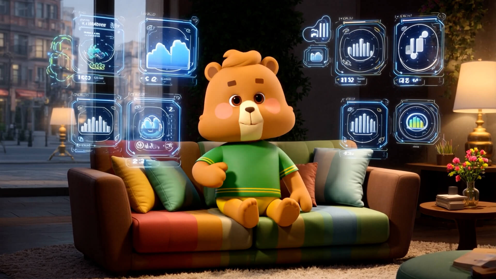
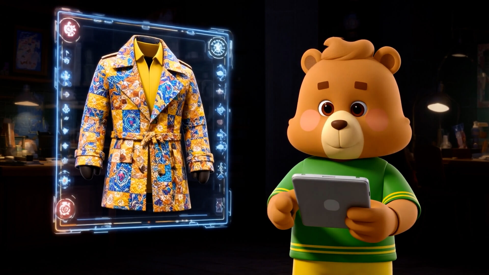
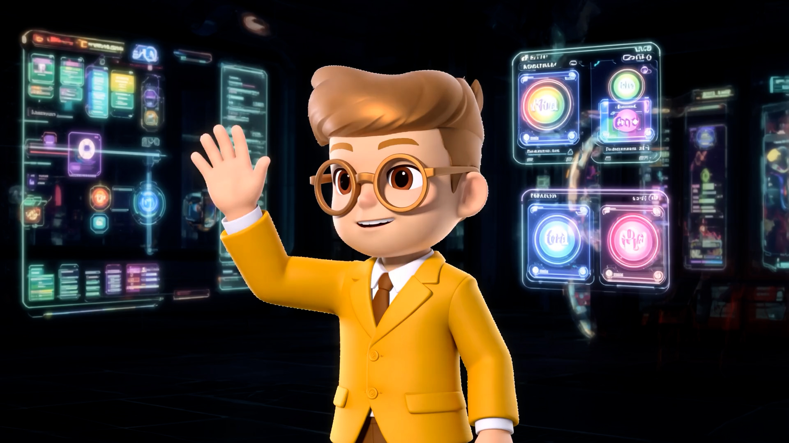

柒先生的奇妙之旅
剧情概要 Story
清晨的杂乱生活、堆积的待办事项、工作与知识的焦虑——柒先生以为自己要陷入一天的混乱。 直到他点开桌上的 AI 助手，来自柒牌宇宙的拟人化角色「柒先生」瞬间现身，带来一场意想不到的“AI魔术” 。
创意亮点 Highlights
跨时空场景
从古罗马的石板街道到多地文化地标，AI 用虚拟现实技术让每一处陌生城市都以最美的一帧呈现。
效率与美学
旅途中，AI 记录行程、整理笔记、管理工作，传达出“旅行与效率不再冲突”的品牌生活美学。
AI 生成流程 Production Pipeline
利用 Midjourney 生成风格化分镜，结合 Runway 生成动态影像，最后在 After Effects 中进行合成。通过训练 LoRA 保证了角色「柒安安」在不同场景下的形象一致性。

Midjourney 场景生成

Runway 动态演绎

AE 合成与调色